Project 3
Overview
For this project, we implemented a morphing function that allows us to morph faces.
Defining Correspondences
Approach
Using this very helpful tool developed by a previous CS 180 student, it is possible to easily choose points on the two images that correspond to each other. Using these points, perform a Delaunay triangulation to be able to map the points to each other. For instructive purposes, I have also performed the triangulation on the original images. However, the important triangulation is the mid-way triangulation because we want to map each picture to this midpoint in order to make the morph more seamless.
Results
| Correspondences |
Triangulation |
| 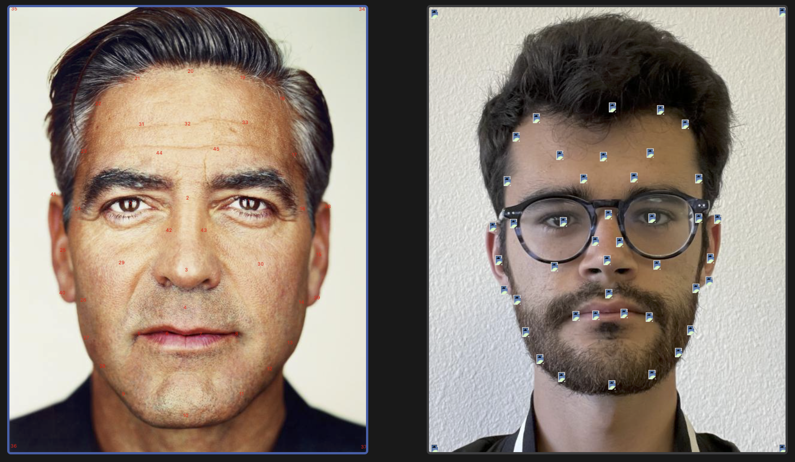 |
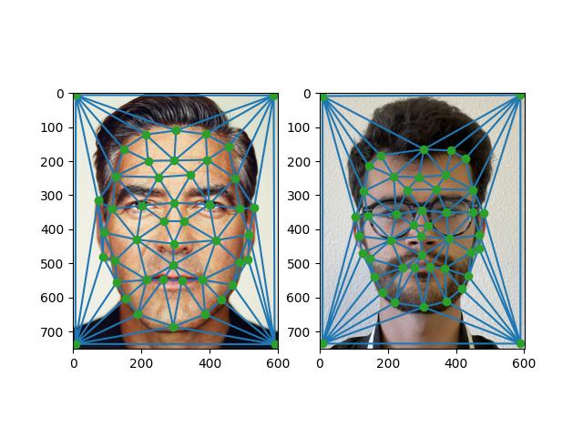 |
| 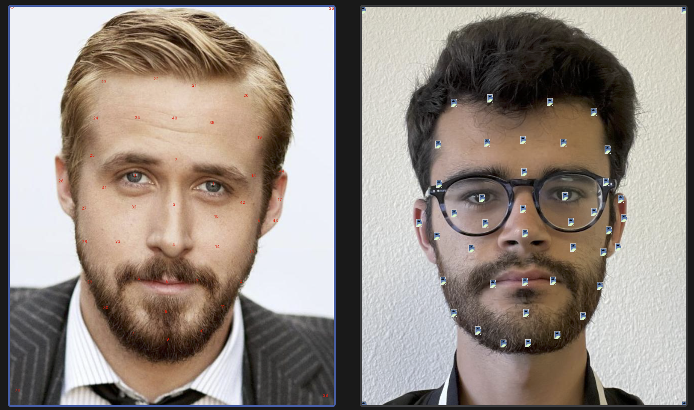 |
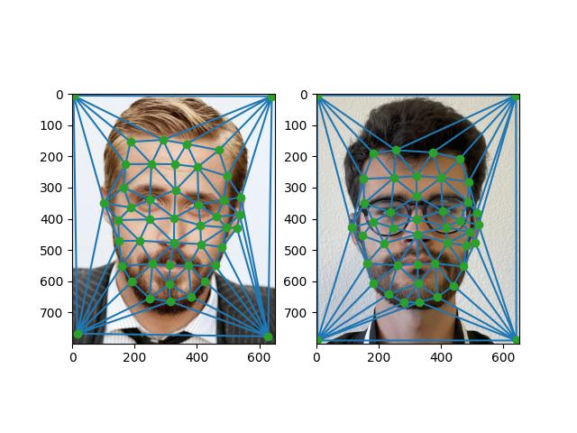 |
Computing the “Mid-way Face"
Approach
The first step was to compute the mean of the correspondence points from the previous section because we want to warp each picture to the midpoint shape. Then, perform a Delaunay triangulation on the average correspondence points to split up the average shape into triangular regions. Then, for each triangle, the idea is that we figure out what pixel in both images corresponds to each pixel inside the region of the triangle. This is the inverse warp because, instead of mapping pixels from the original images into the average picture, we map pixels in the average picture to the original images. By doing this, we can find the correspondence between a pixel in each image.
Therefore, compute the interior region of the triangle delimited by the points of the average shape. Then, find the affine map between each original shape and the average shape. Let \(X\) be the original shape of the original image and \(Y\) be the average shape, then there is an affine map \(T\) such that \(T(X) = AX = Y\) for some matrix \(A\). Then, \(A = YX^{-1} \implies A^{-1} = XY^{-1}\). We use \(A^{-1}\) to find the inverse warp. This mapping is only for one of the triangles, however. So we repeat this computation for all triangles.
When we compute \(A^{-1}\), we can obtain the corresponding pixels in the original images by mapping the interior of the whole triangle in the average shape. This is performed by using the Barycentric coordinates of the pixels.
Finally, using the cross dissolve factor, perform a linear interpolation of the two regions. The cross dissolve factor is simply a number that determines which images's colors will be used. So, if we set it to 0.5, it will be an average of the colors. Thus, we have computed the average shape and mapped the pixels to compute the corresponding average color for each pixel.
Results
| Me |
Mid-Way Face |
Celebrity |
| 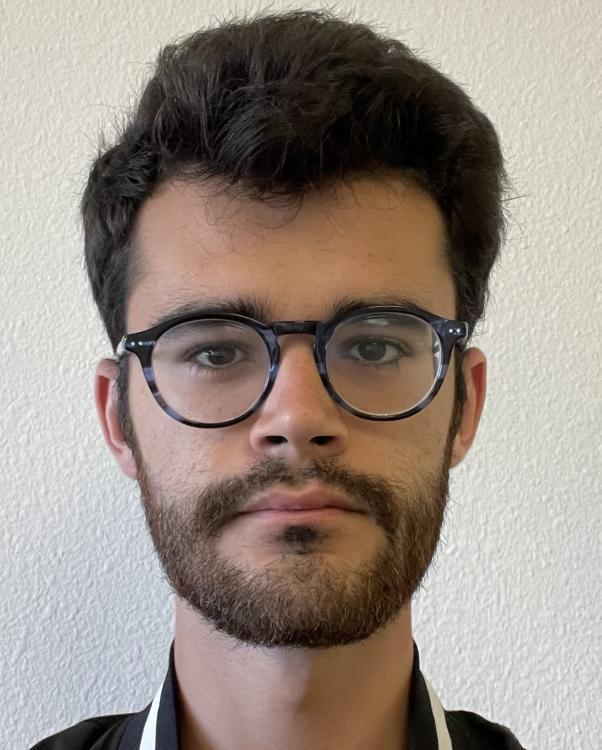 |
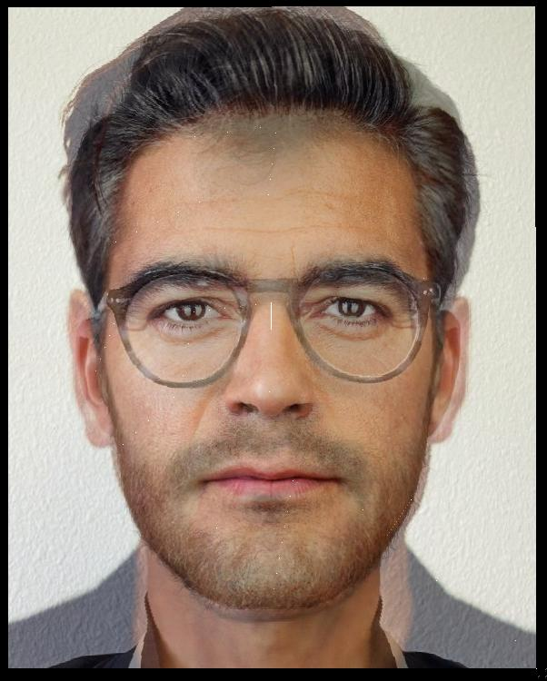 |
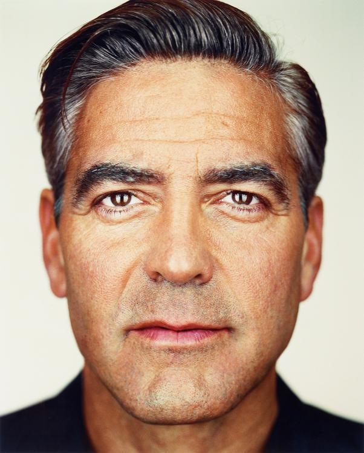 |
| 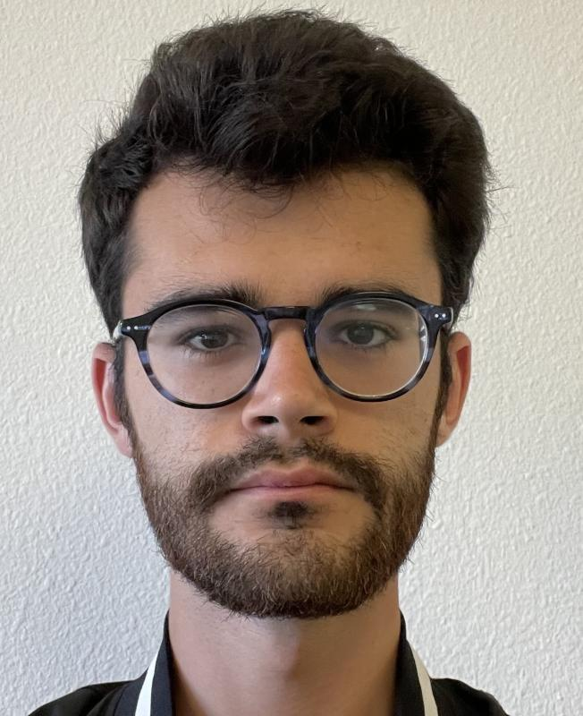 |
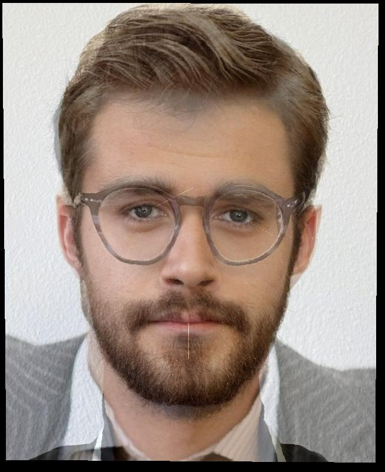 |
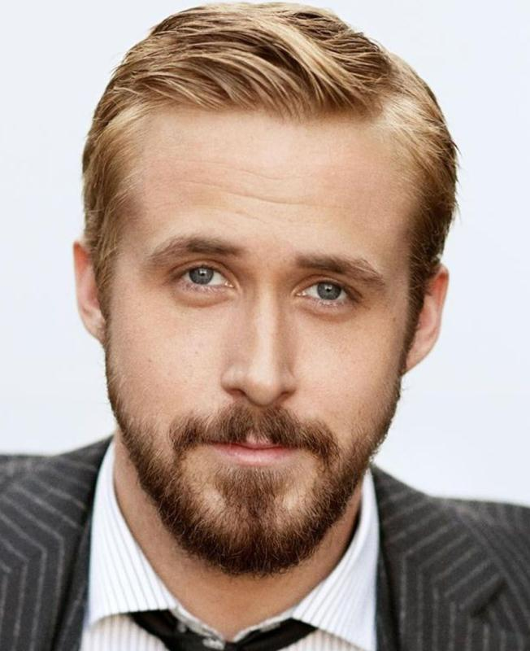 |
The Morph Sequence
Approach
This section uses the code and calculations from the previous parts. However, in this section, we also want to compute other intermediate shapes and not just the average shape. Therefore, we specify a warp factor which determines the linear combination of the two shapes of the images. However, note that we always use the triangulation computed from the average shape because we want all of the intermediate warps to have the same mappings, which requires the same triangulation. If we repeat this for multiple values of the warp factor and the cross dissolve factor (for values between 0 and 1) and concatenate the results, we get the gifs below.
For the second gif, I also reflected the sequence to make the looping look nicer.
Note: my code didn't loop the gifs automatically so I ran "brew install imagemagick" and "convert -delay 5 -loop 0 noloop.gif loop.gif".
Results
| Joe Clooney |
Joe Gosling - Literally Me |
 |
 |
The “Mean face" of a population
Approach
For the following sections, I used this dataset of images, named the FEI Face Database, as a set of images for a certain population.
To compute the average face of this population, we repeat part 2 for all of the images in the dataset. I used a warp factor of 0 so that all images get morphed into the average shape and a cross dissolve factor of 1 so that all images retain their original colors. Then, just take the average as before, yielding the average face shown below.
Moreover, I warped my face onto the shape of the average face as well as mapping the average face onto the shape of my face. This is done by picking opposite values of warp factor and cross dissolve ((0,1) and (1,0)). For this step, I again used this website to get the correspondences between my face and the average face.
Finally, I also include two examples of the images from the dataset warped into the shape of the average face, which had already been computed before when I repeated part 2 for each image of the dataset.
Results
| Average Face |
Me with Average Shape |
Average Face with My Shape |
| 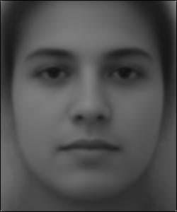 |
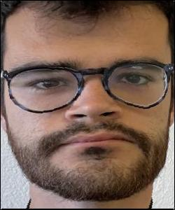 |
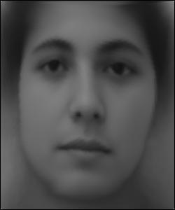 |
| Original Face |
Face morphed to Average Shape |
 |
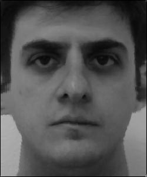 |
 |
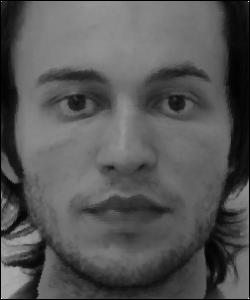 |
Caricatures: Extrapolating from the mean
Approach
This is the exact same computation as the previous section where I warped my face onto the shape of the average face but now I set the warp factor to a value beyond the interval [0,1]. Namely, I set it to -0.75 which makes my face fit the average face even more. Of course, cross dissolve is set to 1 so the colors of my face are preserved.
Results
Bells and Whistles
Morphing with my Friends
This is essentially the same as "The morph sequence" section but we chain multiple morphs into a single continuous morph. I did this by making the images the same size and making the correspondence selections for each pair of images. Credit to Austin Zhu, Rebecca Feng, and Samyak Tiwari.
Results
| Friends |
 |